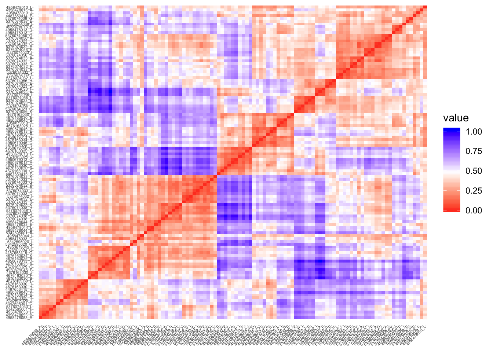
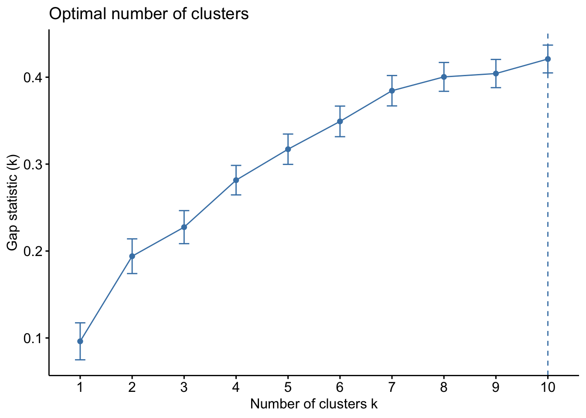
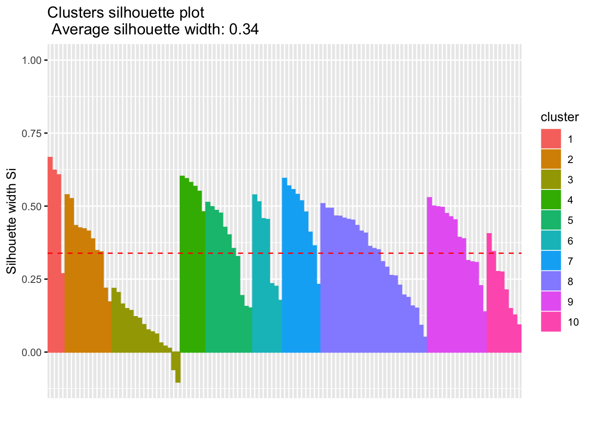
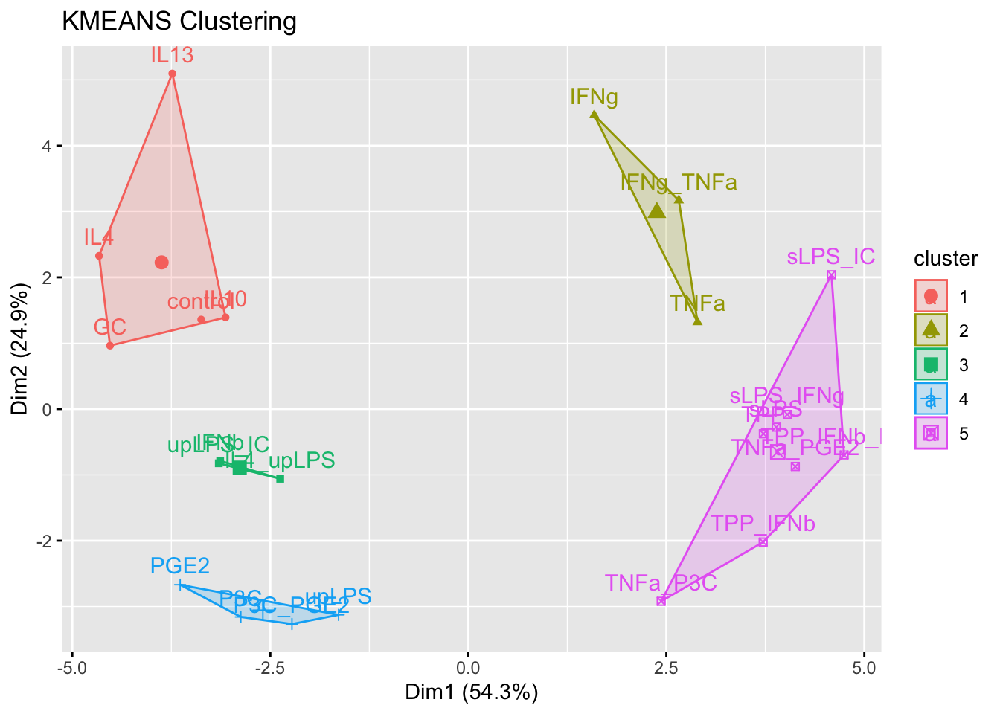
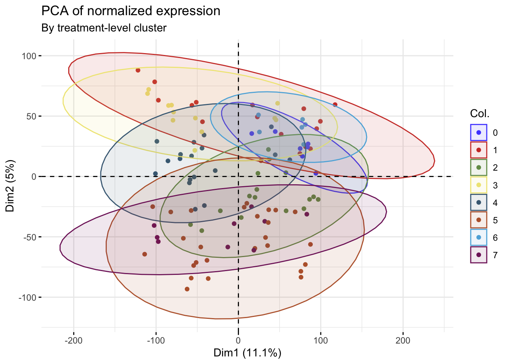

Clustering experimental macrophage gene expression data
mleukam
2019-06-04
Last updated: 2019-06-15
Checks: 6 1
Knit directory: tcga_macs/
This reproducible R Markdown analysis was created with workflowr (version 1.4.0). The Checks tab describes the reproducibility checks that were applied when the results were created. The Past versions tab lists the development history.
Great! Since the R Markdown file has been committed to the Git repository, you know the exact version of the code that produced these results.
Great job! The global environment was empty. Objects defined in the global environment can affect the analysis in your R Markdown file in unknown ways. For reproduciblity it’s best to always run the code in an empty environment.
The command set.seed(20190409) was run prior to running the code in the R Markdown file. Setting a seed ensures that any results that rely on randomness, e.g. subsampling or permutations, are reproducible.
Great job! Recording the operating system, R version, and package versions is critical for reproducibility.
Nice! There were no cached chunks for this analysis, so you can be confident that you successfully produced the results during this run.
Using absolute paths to the files within your workflowr project makes it difficult for you and others to run your code on a different machine. Change the absolute path(s) below to the suggested relative path(s) to make your code more reproducible.
| absolute | relative |
|---|---|
| ~/tcga_macs/output/mac_eset.rds | output/mac_eset.rds |
| ~/tcga_macs/output/normalized_probe_intensities.Rds | output/normalized_probe_intensities.Rds |
| ~/tcga_macs/output/km_cluster_assignments.csv | output/km_cluster_assignments.csv |
| ~/tcga_macs/output/mac_eset_w_clusters.rds | output/mac_eset_w_clusters.rds |
Great! You are using Git for version control. Tracking code development and connecting the code version to the results is critical for reproducibility. The version displayed above was the version of the Git repository at the time these results were generated.
Note that you need to be careful to ensure that all relevant files for the analysis have been committed to Git prior to generating the results (you can use wflow_publish or wflow_git_commit). workflowr only checks the R Markdown file, but you know if there are other scripts or data files that it depends on. Below is the status of the Git repository when the results were generated:
Ignored files:
Ignored: .DS_Store
Ignored: .Rhistory
Ignored: .Rproj.user/
Ignored: analysis/.DS_Store
Ignored: data/.DS_Store
Ignored: data/160genes_ensembl.gencode28.txt
Ignored: data/GSE46903_Affymetrix_Reanalyzed_data.txt.gz
Ignored: data/GSE46903_Affymetrix_metadata.txt.gz
Ignored: data/GSE46903_RAW.tar
Ignored: data/GSE46903_non-normalized.txt
Ignored: data/GSE46903_nonnormalized copy.tsv
Ignored: data/gencode.v22.primary_assembly.annotation.gtf.geneinfo
Ignored: data/gse_46903.rds
Ignored: data/htseq_counts/
Ignored: data/kyle.gdc_tcga_bam_metadata.txt
Ignored: docs/.DS_Store
Ignored: docs/assets/corrmatrix.tiff
Ignored: output/Combined_down_plots.pdf
Ignored: output/Combined_up_plots.pdf
Ignored: output/combined_boxplots.pdf
Ignored: output/dge_frame.csv
Ignored: output/downreg_c1.csv
Ignored: output/downreg_c2.csv
Ignored: output/downreg_c3.csv
Ignored: output/downreg_c4.csv
Ignored: output/downreg_c5.csv
Ignored: output/downreg_c6.csv
Ignored: output/downreg_c7.csv
Ignored: output/expr_matrix.csv
Ignored: output/expr_matrix.rds
Ignored: output/expression_set.rds
Ignored: output/filtered.total.phenodata.csv
Ignored: output/filtered.total.phenodata.rds
Ignored: output/flat_total_counts.rds
Ignored: output/flat_total_pheno.rds
Ignored: output/gset_ids_complete.rds
Ignored: output/km_cluster_assignments.csv
Ignored: output/mac_eset.rds
Ignored: output/mac_eset_w_clusters.rds
Ignored: output/nested_list_dge_top50_updown.rds
Ignored: output/normalized_probe_intensities.Rds
Ignored: output/processed_lumi_46903.Rds
Ignored: output/processed_lumi_46903.tsv
Ignored: output/processed_lumi_exprs.txt
Ignored: output/score_matrix.csv
Ignored: output/selected.total.counts.csv
Ignored: output/selected.total.counts.rds
Ignored: output/table_c1.csv
Ignored: output/table_c2.csv
Ignored: output/table_c3.csv
Ignored: output/table_c4.csv
Ignored: output/table_c5.csv
Ignored: output/table_c6.csv
Ignored: output/table_c7.csv
Ignored: output/tcga_counts_dataframe_list.rds
Ignored: output/tcga_counts_list.rds
Ignored: output/tcga_gdc_manifest.rds
Ignored: output/tcga_gsva_17geneset_results.rds
Ignored: output/tcga_metadata_list.rds
Ignored: output/tcga_total_counts.csv
Ignored: output/upreg_c1.csv
Ignored: output/upreg_c2.csv
Ignored: output/upreg_c3.csv
Ignored: output/upreg_c4.csv
Ignored: output/upreg_c5.csv
Ignored: output/upreg_c6.csv
Ignored: output/upreg_c7.csv
Note that any generated files, e.g. HTML, png, CSS, etc., are not included in this status report because it is ok for generated content to have uncommitted changes.
These are the previous versions of the R Markdown and HTML files. If you’ve configured a remote Git repository (see ?wflow_git_remote), click on the hyperlinks in the table below to view them.
| File | Version | Author | Date | Message |
|---|---|---|---|---|
| Rmd | 66464db | mleukam | 2019-06-15 | updates to homepage |
| html | 4768ecf | mleukam | 2019-06-06 | Build site. |
| Rmd | 3ff5865 | mleukam | 2019-06-06 | completed KM clustering by treatment group |
| html | e28f86a | mleukam | 2019-06-05 | Build site. |
| Rmd | 3bf9158 | mleukam | 2019-06-05 | clustering by treatment group now updated |
| html | 788b028 | mleukam | 2019-06-05 | Build site. |
| Rmd | 25733dc | mleukam | 2019-06-05 | major updates including clustering and correlation |
Setup
Clear workspace prior to analysis and load necessary packages
rm(list = ls())library("tidyverse")── Attaching packages ────────────────────────── tidyverse 1.2.1 ──✔ ggplot2 3.1.1 ✔ purrr 0.3.2
✔ tibble 2.1.3 ✔ dplyr 0.8.1
✔ tidyr 0.8.3 ✔ stringr 1.4.0
✔ readr 1.3.1 ✔ forcats 0.4.0── Conflicts ───────────────────────────── tidyverse_conflicts() ──
✖ dplyr::filter() masks stats::filter()
✖ dplyr::lag() masks stats::lag()library("factoextra")Welcome! Related Books: `Practical Guide To Cluster Analysis in R` at https://goo.gl/13EFCZlibrary("WGCNA")Loading required package: dynamicTreeCutLoading required package: fastcluster
Attaching package: 'fastcluster'The following object is masked from 'package:stats':
hclust
Attaching package: 'WGCNA'The following object is masked from 'package:stats':
corlibrary("annotate")Loading required package: AnnotationDbiLoading required package: stats4Loading required package: BiocGenericsLoading required package: parallel
Attaching package: 'BiocGenerics'The following objects are masked from 'package:parallel':
clusterApply, clusterApplyLB, clusterCall, clusterEvalQ,
clusterExport, clusterMap, parApply, parCapply, parLapply,
parLapplyLB, parRapply, parSapply, parSapplyLBThe following objects are masked from 'package:dplyr':
combine, intersect, setdiff, unionThe following objects are masked from 'package:stats':
IQR, mad, sd, var, xtabsThe following objects are masked from 'package:base':
anyDuplicated, append, as.data.frame, basename, cbind,
colMeans, colnames, colSums, dirname, do.call, duplicated,
eval, evalq, Filter, Find, get, grep, grepl, intersect,
is.unsorted, lapply, lengths, Map, mapply, match, mget, order,
paste, pmax, pmax.int, pmin, pmin.int, Position, rank, rbind,
Reduce, rowMeans, rownames, rowSums, sapply, setdiff, sort,
table, tapply, union, unique, unsplit, which, which.max,
which.minLoading required package: BiobaseWelcome to Bioconductor
Vignettes contain introductory material; view with
'browseVignettes()'. To cite Bioconductor, see
'citation("Biobase")', and for packages 'citation("pkgname")'.Loading required package: IRangesLoading required package: S4Vectors
Attaching package: 'S4Vectors'The following objects are masked from 'package:dplyr':
first, renameThe following object is masked from 'package:tidyr':
expandThe following object is masked from 'package:base':
expand.grid
Attaching package: 'IRanges'The following objects are masked from 'package:dplyr':
collapse, desc, sliceThe following object is masked from 'package:purrr':
reduce
Attaching package: 'AnnotationDbi'The following object is masked from 'package:dplyr':
selectLoading required package: XMLlibrary("lumi")Setting options('download.file.method.GEOquery'='auto')Setting options('GEOquery.inmemory.gpl'=FALSE)library("FactoMineR")
library("ggsci")
library("ggpubr")Loading required package: magrittr
Attaching package: 'magrittr'The following object is masked from 'package:purrr':
set_namesThe following object is masked from 'package:tidyr':
extractlibrary("DESeq2")Loading required package: GenomicRangesLoading required package: GenomeInfoDbLoading required package: SummarizedExperimentLoading required package: DelayedArrayLoading required package: matrixStats
Attaching package: 'matrixStats'The following objects are masked from 'package:Biobase':
anyMissing, rowMediansThe following object is masked from 'package:dplyr':
countLoading required package: BiocParallel
Attaching package: 'DelayedArray'The following objects are masked from 'package:matrixStats':
colMaxs, colMins, colRanges, rowMaxs, rowMins, rowRangesThe following object is masked from 'package:purrr':
simplifyThe following objects are masked from 'package:base':
aperm, apply
Attaching package: 'DESeq2'The following object is masked from 'package:lumi':
vstLoad data
mac_eset <- readRDS("~/tcga_macs/output/mac_eset.rds")
lumi_46903 <- readRDS("~/tcga_macs/output/normalized_probe_intensities.Rds")Filter probes
Detailed instructions for building a contrast matrix and filtering low-expression scores can be found in the Limma User’s Guide, particularly chapters 9.2 and 9.3
# retreive normalized data
dataMatrix <- exprs(mac_eset)
# remove the probes that are not detected in raw data
presentCount <- detectionCall(lumi_46903)
selDataMatrix <- dataMatrix[presentCount > 0,]
probeList <- rownames(selDataMatrix)PCA
To get a sense of the relationships among the samples, we will start with a simple PCA plot labeled by treatment and then by the clusters derived in the original paper.
Source: https://rpkgs.datanovia.com/factoextra/index.html
# transpose matrix to tidy data format
t_DataMatrix <- t(selDataMatrix)
t_DataMatrix[1:5, 1:5] fqPEquJRRlSVSfL.8A ckiehnugOno9d7vf1Q ritxUH.kuHlYqjozpE
4487653414_E 6.329524 6.314675 6.312922
4487653415_E 6.141837 6.100132 6.152733
4487653415_G 6.119038 6.295151 5.910791
4487653415_H 6.390689 6.000457 6.340384
4676163025_B 6.017910 6.711265 5.980075
QpE5UiUgmJOJEkPXpc EedxN6XeUOgPSCywB0
4487653414_E 6.271391 6.391397
4487653415_E 6.178287 6.381247
4487653415_G 6.044671 6.518846
4487653415_H 6.351849 6.470969
4676163025_B 6.025952 6.122285# extract phenotype data
pheno_data <- pData(mac_eset)
# add categories and factors
# select columns of interest from phenotype data
pheno_pca <- pheno_data %>%
rownames_to_column(var = "raw_id") %>%
dplyr::select(raw_id, treatment, clusternum)
df_pca <- t_DataMatrix %>%
as.data.frame() %>%
rownames_to_column(var = "raw_id") %>%
left_join(pheno_pca, by = "raw_id") %>%
as_tibble() %>%
dplyr::select(raw_id, treatment, clusternum, everything()) %>%
print()# A tibble: 111 x 39,471
raw_id treatment clusternum fqPEquJRRlSVSfL… ckiehnugOno9d7v…
<chr> <fct> <fct> <dbl> <dbl>
1 44876… control 0 6.33 6.31
2 44876… IL4 2 6.14 6.10
3 44876… TPP 9 6.12 6.30
4 44876… IFNg 6 6.39 6.00
5 46761… sLPS_IC 7 6.02 6.71
6 46761… IL13 2 6.13 6.52
7 46761… IL10 1 6.11 6.03
8 46761… sLPS 7 6.83 6.27
9 46761… IFNg 6 6.51 6.30
10 46761… IL4 2 6.08 6.12
# … with 101 more rows, and 39,466 more variables:
# ritxUH.kuHlYqjozpE <dbl>, QpE5UiUgmJOJEkPXpc <dbl>,
# EedxN6XeUOgPSCywB0 <dbl>, `3l3lDoD0gssAdeehIY` <dbl>,
# WS4S8aGL855YVcUUZE <dbl>, KS8aGL855YVcUUZH50 <dbl>,
# TdSfOuLunqrkiJkag8 <dbl>, ZfoDn4IUQp4Auf56LU <dbl>,
# `97DZJV_gpQpKINl0Ec` <dbl>, W38p0ogk.wIBVRXllY <dbl>,
# QUTgUoqmp7jyKCQRHo <dbl>, BZKiEvS0eQ305U0v34 <dbl>,
# HshT.TuzF13i0V0rKg <dbl>, `6Rff76jvd6HDh1KYhQ` <dbl>,
# `6TheVd.HiE1UF3lX6g` <dbl>, QueXUXiL5yqvftiNO0 <dbl>,
# xSoSAshSJ89KgqiIgo <dbl>, l1KvXI7ipJV.vp44QQ <dbl>,
# TOThf8F.h.nz9UcYKo <dbl>, xpKvX0PpP9VIPuJQJc <dbl>,
# `3lKHxISSJPFfvpQ490` <dbl>, ljjP4gnSDe9zlUP.e8 <dbl>,
# NVYooKpCzodxSAWrn8 <dbl>, EpvlIuKLySkofhinf4 <dbl>,
# cQchF.wLl3A9NI6UB4 <dbl>, WpeTkd6Xk6SBCFe3cA <dbl>,
# EiRfvEvWl3SzupwOUk <dbl>, NajKinX6sOcFzkCC8U <dbl>,
# uy8FDV6oMleUVSCUKc <dbl>, `9KKuqV6OH9SXfQeH50` <dbl>,
# NIwad1IXif1m0kLKDY <dbl>, `6pIQKnV6ceoIxIFNe4` <dbl>,
# `9HupjiArrod98ekqUU` <dbl>, Hekkk3HjqAu6N_g3SI <dbl>,
# BgnCcruCDoPoJUeX1Q <dbl>, TtLPvPp.2z13wbgW3s <dbl>,
# EW6rxUWU6SUA75_OuA <dbl>, WpcOqV.0CiNzoUM_iY <dbl>,
# fgexZ3f.pSdRXVhgpQ <dbl>, `64Va9Z4jSCkEneL1Ko` <dbl>,
# WSzete5VJ5QKIuqlOU <dbl>, `67nRKEfAUoYpOlWIR4` <dbl>,
# TB0kgnrABOqJWihKec <dbl>, `3nTrIAUycLJNkh8JsQ` <dbl>,
# uud.vTT6V09Qkfxnt4 <dbl>, inSONXXEOiU0y7euFI <dbl>,
# lQKyzSyky0.3s3.RdE <dbl>, `3uijtRXe3Sl.9A8Cks` <dbl>,
# `0pf.QRwb4sWsn7jQKQ` <dbl>, `9qaJ6tLVs.P_f4ginU` <dbl>,
# ZFcKnq6e3QoRPgxvuE <dbl>, `3WpTVHJJ.pdTPndP0I` <dbl>,
# Q0VkeLQSHiZtSl4Sd4 <dbl>, `63Oiusg8JTF.19NHfo` <dbl>,
# Nonl3upr2ojFAogAsU <dbl>, NXMJ5W6SG.FdzRIX9E <dbl>,
# ESI0LuiXXiImyJI07g <dbl>, BGm6KH.W4lIY56KKz0 <dbl>,
# xSJnoVcuLvQDT7VX7o <dbl>, KlBdd0SXezd5KUx69Q <dbl>,
# oe5.ueJNeqBW0uufeg <dbl>, `3Vz4fWrCqLQ_PFSSRI` <dbl>,
# frS7Up6BAmUuB3h7OI <dbl>, Qq3xIFN6fT336H4154 <dbl>,
# cnvl0IALn.3U6OKchU <dbl>, rknSUUdLn3e5KJS148 <dbl>,
# lldNIQXQNde_jgnE0k <dbl>, HpR9XdAhwVIKgwju3U <dbl>,
# QukxEiSW7kgU4wVQOo <dbl>, `6IrsRJZWoJg50YvTRQ` <dbl>,
# cWeufQ01JXsb9L_j8k <dbl>, ulXud57eilG6O9OI5M <dbl>,
# QJUo3p.lIr5BO_IgVo <dbl>, WuCFSiISI5gUVAEZEU <dbl>,
# iFJN0mUncUvdv_pSKQ <dbl>, fiuenn78T3Xeqdxd1E <dbl>,
# TtEeFJI3qOX6IoT14U <dbl>, TVXfennQpiNwn33B14 <dbl>,
# KuSfYpUS3mF9_.ojiA <dbl>, cVQq9dO7.RQBRVLl4g <dbl>,
# `61RbnpngeHtZ5QqC4Q` <dbl>, Nu.SkSgsSS4qgOELUk <dbl>,
# `0aSV4IHnEDV6Ff8fzo` <dbl>, `95wFeFd5qnl5an0XVU` <dbl>,
# lHLVWt1Y9UHi7z_RHk <dbl>, `0r_C6LdOF3SDCu0XV4` <dbl>,
# rREnB5QDE_FssnvQdc <dbl>, rIh7pCCJ4OC_pSGefU <dbl>,
# Tv67vVkBVf7nuqesnQ <dbl>, KW2iFI4XvI6ctezB2E <dbl>,
# `9NEiTSJaChckMRK3lY` <dbl>, ruOh7lavetOhCqSukg <dbl>,
# rjoe5Wr3rToQqkrpIg <dbl>, ZE7Ep0K55I4r5raU0c <dbl>,
# ETpapxdaO1Ud9AlCOs <dbl>, fYsRHPeGkhevPuOCYo <dbl>,
# WorcjmvtHgrqiD.Juo <dbl>, cXorcjmvtHgrqiD.Js <dbl>,
# N1c9slN1ulDuHFuUkk <dbl>, rUkoguun1KcB9Asggo <dbl>, …norm_probe_pca <- PCA(df_pca[,c(4:39471)], graph = FALSE)
head(get_eig(norm_probe_pca)) eigenvalue variance.percent cumulative.variance.percent
Dim.1 4362.4687 11.053179 11.05318
Dim.2 1979.9550 5.016608 16.06979
Dim.3 1837.4059 4.655432 20.72522
Dim.4 1348.3194 3.416234 24.14145
Dim.5 1122.6519 2.844461 26.98591
Dim.6 933.7521 2.365846 29.35176fviz_eig(norm_probe_pca)
| Version | Author | Date |
|---|---|---|
| 788b028 | mleukam | 2019-06-05 |
Source for overriding shape change with habillage argument: https://github.com/kassambara/factoextra/issues/20
# visualize eigenvalues
mypal <- pal_igv("default", alpha = 1)(23)
pca1 <- fviz_pca_ind(norm_probe_pca,
label = "none", # hide individual labels
habillage = "none",
col.ind = df_pca$treatment,
palette = mypal,
geom.ind = "point",
invisible = "quali",
pointshape = 19,
title = "PCA of normalized expression"
) +
labs(subtitle = "By activation agent")
print(pca1)
| Version | Author | Date |
|---|---|---|
| 788b028 | mleukam | 2019-06-05 |
pca2 <- fviz_pca_ind(norm_probe_pca,
label = "none", # hide individual labels
habillage = "none",
col.ind = df_pca$clusternum,
palette = mypal,
geom.ind = "point",
invisible = "quali",
pointshape = 19,
addEllipses = TRUE,
title = "PCA of normalized expression"
) +
labs(subtitle = "By cluster assignment")
print(pca2)
| Version | Author | Date |
|---|---|---|
| 788b028 | mleukam | 2019-06-05 |
Correlation Coefficient Matrix Analysis
Background and references:
Method source for correlation matrix: https://davetang.org/muse/2012/01/31/creating-a-correlation-matrix-with-r/
More on constructing a correlation matrix:
https://www.researchgate.net/post/How_to_calculate_Gene-Gene_Pearson_correlation
WGCNA package: https://horvath.genetics.ucla.edu/html/CoexpressionNetwork/Rpackages/WGCNA/Tutorials/index.htmlFollowing Xue et al Immunity (2014), select the 1000 probes with the highest variance to reduce the computational load to make a correlation matrix
Source for selecting highest variance: http://r.789695.n4.nabble.com/Help-on-selecting-genes-showing-highest-variance-td3580645.html
# select 1000 highest probes with highest variation
# input is normalized expression matrix with zero expression genes removed
myvars <- apply(selDataMatrix, 1, var, na.rm = TRUE)
myvars <- sort(myvars, decreasing = TRUE)
myvars <- myvars[1:1000]
data_matrix_onek <- selDataMatrix[names(myvars), ]
dim(data_matrix_onek) [1] 1000 111Heirarchical Clustering
Quick hierarchical clustering to look for outliers. Will also visualize treatment condition and cluster assignment from the original paper.
# heirarchical cluster
datExpr <- t(data_matrix_onek)
sampleTree = hclust(dist(datExpr), method = "average")
sizeGrWindow(16,9)
par(cex = 0.4)
plot(sampleTree, main = "Sample clustering to detect outliers",
sub = "",
xlab = "",
cex.lab = 1.5,
cex.axis = 1.5,
cex.main = 2.5)
# no significant outliersSet up phenotype data for WGCNA
# use pheno_data from above with treatment identification and cluster number
# select columns I want to visualize
traitData <- pheno_data %>%
dplyr::select(treatment, clusternum) %>%
print() treatment clusternum
4487653414_E control 0
4487653415_E IL4 2
4487653415_G TPP 9
4487653415_H IFNg 6
4676163025_B sLPS_IC 7
4676163025_C IL13 2
4676163025_D IL10 1
4676163025_G sLPS 7
4676163025_H IFNg 6
4676163025_J IL4 2
4676163025_K sLPS_IC 7
4676163025_L GC 1
4676163030_A control 0
4676163030_B TPP 9
4676163030_C IL4 2
4676163030_D IFNg 6
4676163030_E control 0
4676163030_F TPP 9
4676163030_G IL4 2
4676163030_H IFNg 6
4676163030_I control 0
4676163030_J TPP 9
4676163030_K IL4 2
4676163030_L IFNg 6
4676163034_B IFNg 6
4676163034_G TPP 9
4676163034_H control 0
4676163034_K TPP 9
4950679013_A IL13 2
4950679013_C IL4 2
4950679013_D sLPS 7
4950679013_E control 0
4950679013_F IL13 2
4950679013_G IL10 1
4950679013_J GC 1
4950679045_A IL10 1
4950679045_B GC 1
4950679045_C control 0
4950679045_F sLPS_IC 7
4950679045_G IL4 2
4950679045_I TPP 9
4950679045_K IFNg 6
4958478013_A upLPS 3
4958478013_C upLPS_IC 3
4958478013_D upLPS_IC 3
4958478013_F upLPS_IC 3
4958478013_J upLPS 3
4958478013_L upLPS 3
4958478033_C sLPS 7
4958478033_E sLPS 7
4958478044_B sLPS 7
4958478044_E sLPS 7
4958478044_I sLPS 7
4958478044_L sLPS 7
4958478053_A TNFa 6
4958478053_B TNFa 6
4958478053_F TNFa 6
5342595001_A sLPS_IFNg 7
5342595001_C IFNg_TNFa 6
5342595001_F IFNg_TNFa 6
5342595020_G sLPS_IFNg 7
5342595020_I sLPS_IFNg 7
5342595020_J IFNg_TNFa 6
5376074023_A IL4 2
5376074023_C upLPS 3
5376074023_D IL4_upLPS 2
5376074023_E IL4_upLPS 2
5376074023_F IL4 2
5376074023_G IL4 2
5376074023_I upLPS 3
5376074023_K IL4_upLPS 2
5376074032_A P3C 4
5376074032_B TPP 9
5376074032_C P3C_PGE2 4
5376074032_E TNFa_P3C 8
5376074032_F P3C_PGE2 4
5376074032_G TNFa_P3C 8
5376074032_H TNFa 6
5376074032_I TNFa 6
5376074032_J P3C 4
5376074032_K TNFa_P3C 8
5376074032_L P3C_PGE2 4
5376074033_A PGE2 4
5376074033_B P3C 4
5376074033_C TNFa_PGE2 8
5376074033_D PGE2 4
5376074033_G TPP 9
5376074033_H TNFa_PGE2 8
5376074033_I PGE2 4
5376074033_J TPP 9
5376074033_K TNFa_PGE2 8
5376074033_L TNFa 6
5376074038_C TPP_IFNb_IFNg 9
5376074038_D TPP_IFNb_IFNg 9
5376074038_E IFNb 1
5376074038_G IFNb 1
5376074038_H TPP_IFNb 9
5376074038_I IFNb 1
5376074038_J TPP_IFNb 9
5376074038_K TPP_IFNb_IFNg 9
5376074038_L TPP_IFNb 9
5376074056_A upLPS 3
5376074056_D upLPS 3
5376074056_E IL4_upLPS 2
5376074056_F upLPS 3
5376074056_G upLPS 3
5376074056_H IL4_upLPS 2
5376074056_I IL4 2
5376074056_J IL4 2
5376074056_K IL4 2
5376074056_L IL4_upLPS 2treat_colors <- pal_igv("default", alpha = 1)(23)
names(treat_colors) <- levels(traitData$treatment)
treat_colors <- enframe(treat_colors) %>%
dplyr::rename(treatment = name, treat_colors = value) %>%
mutate(treatment = as.factor(treatment))
clust_colors <- pal_igv("default", alpha = 1)(9)
names(clust_colors) <- levels(traitData$clusternum)
clust_colors <- enframe(clust_colors) %>%
dplyr::rename(clusternum = name, clust_colors = value) %>%
mutate(clusternum = as.factor(clusternum))
traitColors <- pheno_data %>%
left_join(treat_colors, by = "treatment") %>%
left_join(clust_colors, by = "clusternum") %>%
dplyr::select(treat_colors, clust_colors) %>%
print()Warning: Column `treatment` joining factors with different levels, coercing
to character vectorWarning: Column `clusternum` joining factors with different levels,
coercing to character vector treat_colors clust_colors
1 #5050FFFF #5050FFFF
2 #802268FF #F0E685FF
3 #AE1F63FF #6BD76BFF
4 #F0E685FF #749B58FF
5 #7A65A5FF #5DB1DDFF
6 #5DB1DDFF #F0E685FF
7 #BA6338FF #CE3D32FF
8 #D58F5CFF #5DB1DDFF
9 #F0E685FF #749B58FF
10 #802268FF #F0E685FF
11 #7A65A5FF #5DB1DDFF
12 #CE3D32FF #CE3D32FF
13 #5050FFFF #5050FFFF
14 #AE1F63FF #6BD76BFF
15 #802268FF #F0E685FF
16 #F0E685FF #749B58FF
17 #5050FFFF #5050FFFF
18 #AE1F63FF #6BD76BFF
19 #802268FF #F0E685FF
20 #F0E685FF #749B58FF
21 #5050FFFF #5050FFFF
22 #AE1F63FF #6BD76BFF
23 #802268FF #F0E685FF
24 #F0E685FF #749B58FF
25 #F0E685FF #749B58FF
26 #AE1F63FF #6BD76BFF
27 #5050FFFF #5050FFFF
28 #AE1F63FF #6BD76BFF
29 #5DB1DDFF #F0E685FF
30 #802268FF #F0E685FF
31 #D58F5CFF #5DB1DDFF
32 #5050FFFF #5050FFFF
33 #5DB1DDFF #F0E685FF
34 #BA6338FF #CE3D32FF
35 #CE3D32FF #CE3D32FF
36 #BA6338FF #CE3D32FF
37 #CE3D32FF #CE3D32FF
38 #5050FFFF #5050FFFF
39 #7A65A5FF #5DB1DDFF
40 #802268FF #F0E685FF
41 #AE1F63FF #6BD76BFF
42 #F0E685FF #749B58FF
43 #C75127FF #BA6338FF
44 #CC9900FF #BA6338FF
45 #CC9900FF #BA6338FF
46 #CC9900FF #BA6338FF
47 #C75127FF #BA6338FF
48 #C75127FF #BA6338FF
49 #D58F5CFF #5DB1DDFF
50 #D58F5CFF #5DB1DDFF
51 #D58F5CFF #5DB1DDFF
52 #D58F5CFF #5DB1DDFF
53 #D58F5CFF #5DB1DDFF
54 #D58F5CFF #5DB1DDFF
55 #3B1B53FF #749B58FF
56 #3B1B53FF #749B58FF
57 #3B1B53FF #749B58FF
58 #E4AF69FF #5DB1DDFF
59 #466983FF #749B58FF
60 #466983FF #749B58FF
61 #E4AF69FF #5DB1DDFF
62 #E4AF69FF #5DB1DDFF
63 #466983FF #749B58FF
64 #802268FF #F0E685FF
65 #C75127FF #BA6338FF
66 #6BD76BFF #F0E685FF
67 #6BD76BFF #F0E685FF
68 #802268FF #F0E685FF
69 #802268FF #F0E685FF
70 #C75127FF #BA6338FF
71 #6BD76BFF #F0E685FF
72 #D595A7FF #466983FF
73 #AE1F63FF #6BD76BFF
74 #924822FF #466983FF
75 #CDDEB7FF #802268FF
76 #924822FF #466983FF
77 #CDDEB7FF #802268FF
78 #3B1B53FF #749B58FF
79 #3B1B53FF #749B58FF
80 #D595A7FF #466983FF
81 #CDDEB7FF #802268FF
82 #924822FF #466983FF
83 #837B8DFF #466983FF
84 #D595A7FF #466983FF
85 #612A79FF #802268FF
86 #837B8DFF #466983FF
87 #AE1F63FF #6BD76BFF
88 #612A79FF #802268FF
89 #837B8DFF #466983FF
90 #AE1F63FF #6BD76BFF
91 #612A79FF #802268FF
92 #3B1B53FF #749B58FF
93 #5A655EFF #6BD76BFF
94 #5A655EFF #6BD76BFF
95 #749B58FF #CE3D32FF
96 #749B58FF #CE3D32FF
97 #E7C76FFF #6BD76BFF
98 #749B58FF #CE3D32FF
99 #E7C76FFF #6BD76BFF
100 #5A655EFF #6BD76BFF
101 #E7C76FFF #6BD76BFF
102 #C75127FF #BA6338FF
103 #C75127FF #BA6338FF
104 #6BD76BFF #F0E685FF
105 #C75127FF #BA6338FF
106 #C75127FF #BA6338FF
107 #6BD76BFF #F0E685FF
108 #802268FF #F0E685FF
109 #802268FF #F0E685FF
110 #802268FF #F0E685FF
111 #6BD76BFF #F0E685FFsampleTree2 <- hclust(dist(datExpr), method = "average")
plotDendroAndColors(sampleTree2, traitColors,
groupLabels = names(traitData),
main = "Sample dendrogram and treatment assignments")
| Version | Author | Date |
|---|---|---|
| 788b028 | mleukam | 2019-06-05 |
Correlation matrix for individual samples
Will also use top 1000 most variable probes for correlation clustering to limit memory usage and eliminate noise.
Source for plots: https://www.datanovia.com/en/blog/cluster-analysis-in-r-simplified-and-enhanced/
# create correlation matrix for each sample
# using 1000 most variable probes as defined above
res_dist <- get_dist(datExpr, method = "pearson")
head(round(as.matrix(res_dist), 2))[, 1:6] 4487653414_E 4487653415_E 4487653415_G 4487653415_H
4487653414_E 0.00 0.20 0.46 0.43
4487653415_E 0.20 0.00 0.65 0.62
4487653415_G 0.46 0.65 0.00 0.47
4487653415_H 0.43 0.62 0.47 0.00
4676163025_B 0.58 0.76 0.18 0.49
4676163025_C 0.43 0.33 0.68 0.54
4676163025_B 4676163025_C
4487653414_E 0.58 0.43
4487653415_E 0.76 0.33
4487653415_G 0.18 0.68
4487653415_H 0.49 0.54
4676163025_B 0.00 0.67
4676163025_C 0.67 0.00# plot dissimilarity matrix
fviz_dist(res_dist, lab_size = 4)
| Version | Author | Date |
|---|---|---|
| 788b028 | mleukam | 2019-06-05 |
Hierarchical and K-means clustering of correlations
# Save correlation matrix as variable
res_dist_m <- as.matrix(res_dist)
# Compute hierarchical clustering
res_hc <- hclust(res_dist, method = "ward.D2")
# Visualize
plot(res_hc, cex = 0.5)
| Version | Author | Date |
|---|---|---|
| 788b028 | mleukam | 2019-06-05 |
# Enhanced k-means clustering
res_km <- eclust(res_dist_m, "kmeans", nstart = 25)
| Version | Author | Date |
|---|---|---|
| 788b028 | mleukam | 2019-06-05 |
Diagnostic plots
# Gap statistic plot
fviz_gap_stat(res_km$gap_stat)
| Version | Author | Date |
|---|---|---|
| 788b028 | mleukam | 2019-06-05 |
# Silhouette plot
fviz_silhouette(res_km) cluster size ave.sil.width
1 1 4 0.54
2 2 11 0.38
3 3 16 0.08
4 4 6 0.56
5 5 11 0.36
6 6 7 0.37
7 7 9 0.47
8 8 25 0.33
9 9 14 0.39
10 10 8 0.24
| Version | Author | Date |
|---|---|---|
| 788b028 | mleukam | 2019-06-05 |
# Optimal number of clusters using gap statistics
res_km$nbclust[1] 10# Print result
res_kmK-means clustering with 10 clusters of sizes 4, 11, 16, 6, 11, 7, 9, 25, 14, 8
Cluster means:
4487653414_E 4487653415_E 4487653415_G 4487653415_H 4676163025_B
1 0.3204510 0.1602991 0.7385576 0.6071542 0.7931997
2 0.3440861 0.5653144 0.3350438 0.5435471 0.4603743
3 0.2773671 0.4189354 0.5069836 0.5799195 0.6051550
4 0.3744230 0.3295673 0.6101977 0.7322867 0.7018310
5 0.6626470 0.8200057 0.2289543 0.4802443 0.1668511
6 0.1917451 0.3511616 0.4594417 0.5303247 0.5572744
7 0.3814018 0.2543894 0.6550458 0.5277761 0.6696113
8 0.5703631 0.7631340 0.2387904 0.4617959 0.2608377
9 0.4909228 0.6561842 0.5373291 0.2073447 0.4761009
10 0.2720180 0.4584036 0.4317973 0.3645009 0.4781405
4676163025_C 4676163025_D 4676163025_G 4676163025_H 4676163025_J
1 0.3378588 0.4574801 0.8446998 0.6132788 0.2598690
2 0.5812559 0.3086928 0.5427458 0.5276748 0.5313209
3 0.5325997 0.3741588 0.6943104 0.5762331 0.4825267
4 0.4822733 0.4587865 0.8164575 0.6773380 0.3962700
5 0.6839433 0.4761241 0.1710857 0.4607742 0.6393111
6 0.4046612 0.1975304 0.6930254 0.5318333 0.3235580
7 0.1612906 0.3300945 0.7690372 0.5485679 0.1170756
8 0.7214987 0.4878415 0.2775152 0.4820533 0.6969794
9 0.5597231 0.4143523 0.4267156 0.2246255 0.5327980
10 0.3790190 0.1426608 0.5431507 0.3486490 0.3209520
4676163025_K 4676163025_L 4676163030_A 4676163030_B 4676163030_C
1 0.8911027 0.5007726 0.5660041 0.9293893 0.2984980
2 0.5433283 0.3419227 0.5068672 0.6072943 0.6497464
3 0.6894175 0.3573500 0.5611104 0.7824125 0.5789394
4 0.8085830 0.3752118 0.6860868 0.8636023 0.5862139
5 0.1621042 0.6438173 0.4599421 0.2076044 0.6337420
6 0.6754063 0.1350657 0.3128435 0.6001416 0.3914095
7 0.7539785 0.4271596 0.3215718 0.6380632 0.1395870
8 0.2966787 0.6125040 0.5761870 0.4269443 0.7215839
9 0.4575818 0.6305920 0.3476041 0.5330603 0.4291976
10 0.5406777 0.2985283 0.1754754 0.5057083 0.2996049
4676163030_D 4676163030_E 4676163030_F 4676163030_G 4676163030_H
1 0.6508182 0.4603163 0.8266367 0.2931194 0.6266582
2 0.6126869 0.4068971 0.5452771 0.5547201 0.5142842
3 0.6404312 0.3906423 0.7086054 0.4823384 0.5687190
4 0.7685033 0.4376223 0.7736872 0.3901108 0.6822805
5 0.4822475 0.5773312 0.2305083 0.6946147 0.4386411
6 0.4883747 0.1643478 0.5302460 0.2772233 0.4087460
7 0.4504241 0.3310015 0.5849994 0.1879114 0.4405483
8 0.5674495 0.6344637 0.4150106 0.7450531 0.4985922
9 0.2247457 0.5876491 0.5410018 0.6290316 0.2690343
10 0.3121373 0.2902214 0.4727749 0.3751096 0.2961248
4676163030_I 4676163030_J 4676163030_K 4676163030_L 4676163034_B
1 0.4035770 0.8769709 0.2444187 0.6427900 0.6619221
2 0.4195914 0.5418217 0.6652193 0.6557125 0.5722437
3 0.4133040 0.7244209 0.5638792 0.6650414 0.6174689
4 0.4702957 0.7939179 0.5071731 0.7717476 0.7392812
5 0.5877401 0.1858435 0.7277863 0.4811181 0.4506707
6 0.1532391 0.5548726 0.3615099 0.4977589 0.5602646
7 0.2507251 0.6273771 0.1260940 0.4331707 0.5603165
8 0.6427360 0.3733139 0.8013821 0.5946748 0.4885541
9 0.4923723 0.5439045 0.5712276 0.2329928 0.2029822
10 0.1963177 0.4908582 0.3756105 0.3500175 0.3688223
4676163034_G 4676163034_H 4676163034_K 4950679013_A 4950679013_C
1 0.8003255 0.4455898 0.6861936 0.3367627 0.3309936
2 0.4245025 0.3036431 0.4093027 0.7002712 0.7269082
3 0.6104238 0.3667635 0.5441100 0.6144602 0.6283727
4 0.7115520 0.4434071 0.6545571 0.5952385 0.5920651
5 0.1670792 0.5602111 0.2176331 0.6548812 0.6714776
6 0.5323519 0.2027600 0.4882144 0.3919407 0.4373433
7 0.6595471 0.3808886 0.5823411 0.1065349 0.1100250
8 0.2636174 0.5328837 0.2477032 0.7762109 0.7816075
9 0.4757434 0.4435899 0.4446031 0.4850977 0.5288024
10 0.4201414 0.1544646 0.3965991 0.3272335 0.3865183
4950679013_D 4950679013_E 4950679013_F 4950679013_G 4950679013_J
1 0.9714149 0.4849276 0.3200107 0.5359753 0.5753093
2 0.6781566 0.4551873 0.5956975 0.3955881 0.4154742
3 0.8130471 0.5014847 0.5345440 0.4230097 0.4282931
4 0.9124314 0.6207693 0.4717993 0.4815824 0.4426722
5 0.1606964 0.5007213 0.6526996 0.5265588 0.6334432
6 0.7086913 0.2927160 0.2822988 0.1393075 0.1354990
7 0.7279290 0.3222073 0.1019060 0.3331581 0.4032109
8 0.3862214 0.5529817 0.7610631 0.6043611 0.6640573
9 0.4907231 0.3228577 0.5279105 0.5196541 0.6478343
10 0.5950594 0.1326694 0.2807752 0.1914005 0.3005711
4950679045_A 4950679045_B 4950679045_C 4950679045_F 4950679045_G
1 0.5100336 0.5538109 0.4706952 0.9399917 0.3807428
2 0.4051303 0.3929674 0.3973514 0.6235696 0.6846239
3 0.4661204 0.4110161 0.4449385 0.7618450 0.6111970
4 0.5619802 0.4302992 0.5254053 0.8610747 0.5347463
5 0.4888915 0.6023082 0.5197746 0.1771066 0.6838393
6 0.2191801 0.1300579 0.1918631 0.6374315 0.3683899
7 0.2964753 0.3920477 0.3040869 0.6421927 0.1141256
8 0.5486342 0.6282037 0.5774780 0.3967450 0.8100152
9 0.3968154 0.6349279 0.4025163 0.4970495 0.5793937
10 0.1276269 0.2836038 0.1237784 0.5250761 0.3670139
4950679045_I 4950679045_K 4958478013_A 4958478013_C 4958478013_D
1 0.8159246 0.7764044 0.4313658 0.5644047 0.5422126
2 0.4691346 0.7108463 0.4149671 0.3299580 0.3163385
3 0.6460863 0.7482074 0.4040087 0.3224157 0.2981758
4 0.7447178 0.8683110 0.5683084 0.4028647 0.4048721
5 0.1542111 0.4129842 0.5308058 0.6576471 0.6022690
6 0.4860107 0.6413011 0.4113907 0.2668664 0.2832274
7 0.5918854 0.5368815 0.4182450 0.5702708 0.5662029
8 0.3162718 0.5396185 0.4548116 0.5723906 0.5064307
9 0.4679744 0.2455699 0.2990015 0.6272474 0.5488733
10 0.3864221 0.4558645 0.2580582 0.3702425 0.3565523
4958478013_F 4958478013_J 4958478013_L 4958478033_C 4958478033_E
1 0.5898451 0.3894939 0.4424169 0.6968283 0.6472781
2 0.3556684 0.3802951 0.2491796 0.2853889 0.3739194
3 0.3134902 0.2910590 0.3371025 0.4608439 0.4227775
4 0.4316711 0.4316746 0.4393089 0.5385764 0.5877383
5 0.6398792 0.6932426 0.4930945 0.2639284 0.3633813
6 0.3087405 0.3453184 0.2661858 0.4373326 0.5011226
7 0.6099973 0.4801904 0.3925078 0.6331506 0.6624841
8 0.5506099 0.5328363 0.4222993 0.2370997 0.2521060
9 0.6074233 0.5169022 0.4420561 0.5060878 0.4068194
10 0.4193171 0.3769541 0.1880087 0.3936178 0.4229583
4958478044_B 4958478044_E 4958478044_I 4958478044_L 4958478053_A
1 0.7408143 0.7985257 0.4940981 0.7007092 0.5994256
2 0.4282782 0.4048500 0.2646081 0.4291854 0.5760398
3 0.5590335 0.5415485 0.3268671 0.5392395 0.5852030
4 0.7112621 0.6764283 0.4114040 0.6993505 0.7692114
5 0.2372637 0.2420291 0.4289149 0.2784953 0.5061816
6 0.5925764 0.6047791 0.3166610 0.5578018 0.5638476
7 0.7080688 0.7670146 0.5033164 0.6563199 0.5566701
8 0.2107146 0.1988360 0.3277173 0.2409921 0.4681469
9 0.3616263 0.4838533 0.4497640 0.3116328 0.2647475
10 0.4506215 0.5184506 0.3119829 0.4006695 0.3854398
4958478053_B 4958478053_F 5342595001_A 5342595001_C 5342595001_F
1 0.4734453 0.5083295 0.8606879 0.5945585 0.5723333
2 0.5123942 0.5645396 0.5394092 0.6077607 0.4659454
3 0.5175971 0.5731469 0.6587353 0.6084562 0.5506394
4 0.6867525 0.7457831 0.7815852 0.7479321 0.6773492
5 0.5147898 0.5143133 0.2758094 0.5857950 0.4505253
6 0.5297677 0.6018643 0.6777345 0.7166616 0.5706935
7 0.4874319 0.5181007 0.7204064 0.6798785 0.6099069
8 0.4338898 0.4654284 0.2956659 0.4849592 0.3790328
9 0.2601963 0.2428980 0.4360401 0.2426984 0.2601147
10 0.3299890 0.3733558 0.5826426 0.5107291 0.3679942
5342595020_G 5342595020_I 5342595020_J 5376074023_A 5376074023_C
1 0.7678307 0.6526811 0.5242217 0.09201945 0.4372872
2 0.4421323 0.3607223 0.6256939 0.54090277 0.1496065
3 0.5682731 0.4314593 0.6071239 0.42553256 0.2588882
4 0.7035712 0.5352945 0.7325673 0.36869126 0.3295941
5 0.4045954 0.5393045 0.6005375 0.90807110 0.6312159
6 0.6972864 0.5779532 0.6900666 0.56698748 0.3689985
7 0.8334806 0.8048309 0.5465413 0.37071900 0.6292529
8 0.2581871 0.3491328 0.5274998 0.71180942 0.3802828
9 0.3664817 0.4466280 0.2464821 0.59824766 0.5436595
10 0.5505852 0.5162003 0.4866749 0.51467816 0.3471512
5376074023_D 5376074023_E 5376074023_F 5376074023_G 5376074023_I
1 0.2402037 0.3385544 0.07822945 0.31984257 0.5978274
2 0.4007078 0.3438914 0.52462644 0.36563407 0.1554994
3 0.3301935 0.3190116 0.41363605 0.35178841 0.3351972
4 0.2733937 0.1070840 0.33545048 0.08529063 0.3048415
5 0.7284564 0.7865151 0.88214953 0.85671991 0.5851733
6 0.5375025 0.4812246 0.52780389 0.40546045 0.4035801
7 0.4978869 0.5755611 0.33283056 0.48734889 0.7010875
8 0.5085976 0.5685441 0.71223886 0.69241345 0.4165434
9 0.5570012 0.7149575 0.58336380 0.77218901 0.6592645
10 0.5127059 0.5626074 0.49138127 0.53634115 0.4407737
5376074023_K 5376074032_A 5376074032_B 5376074032_C 5376074032_E
1 0.36274340 0.5459313 0.7518950 0.5218134 0.6663455
2 0.34269838 0.1421707 0.3039094 0.1763313 0.3460680
3 0.35143763 0.3326210 0.5198214 0.3249697 0.5015157
4 0.08728721 0.4007124 0.6238727 0.3829052 0.5762384
5 0.74884131 0.4760145 0.3272210 0.5384455 0.3541172
6 0.47041624 0.3858135 0.6387136 0.3974156 0.6305708
7 0.53721085 0.6094334 0.8054887 0.6337981 0.7359962
8 0.57143925 0.3243823 0.1938526 0.3802523 0.1940857
9 0.73130808 0.5271873 0.5533990 0.6327119 0.4540364
10 0.56379911 0.3397568 0.5442059 0.4169029 0.5009758
5376074032_F 5376074032_G 5376074032_H 5376074032_I 5376074032_J
1 0.4131580 0.5404854 0.6056935 0.6095090 0.4324886
2 0.2459688 0.1370350 0.4042537 0.3518026 0.2304967
3 0.2797791 0.3239716 0.5117568 0.4842169 0.2391464
4 0.3208007 0.3883337 0.6303978 0.5820537 0.2767769
5 0.6635413 0.5031548 0.3908337 0.3973091 0.7228571
6 0.3914037 0.3924500 0.6641028 0.6131781 0.3106781
7 0.5891864 0.6269153 0.6940990 0.6879429 0.5951389
8 0.4672704 0.3317669 0.2226001 0.2233917 0.5165823
9 0.7017703 0.5495908 0.3905612 0.3955768 0.6841138
10 0.4674928 0.3567635 0.4867226 0.4559966 0.4135691
5376074032_K 5376074032_L 5376074033_A 5376074033_B 5376074033_C
1 0.7102003 0.5154270 0.3999213 0.3979229 0.7064557
2 0.3006531 0.1819769 0.2299289 0.2102486 0.3596311
3 0.4772231 0.2747162 0.2598033 0.2240110 0.5365486
4 0.5711624 0.3338143 0.3261002 0.2782379 0.6240273
5 0.3420487 0.6201498 0.6807842 0.7284895 0.3270918
6 0.6173685 0.3735461 0.3270786 0.3120161 0.6764407
7 0.7884636 0.6493857 0.5399368 0.5786523 0.7646473
8 0.1733395 0.4438431 0.5004593 0.5057408 0.1980820
9 0.5462470 0.6581726 0.6576651 0.6042260 0.5023090
10 0.5248431 0.4125207 0.4126785 0.3741907 0.5486383
5376074033_D 5376074033_G 5376074033_H 5376074033_I 5376074033_J
1 0.3703798 0.7347703 0.6717365 0.4575046 0.7491607
2 0.2749711 0.3275035 0.4165122 0.2034797 0.3243552
3 0.2627296 0.5063267 0.5695610 0.2383142 0.5347650
4 0.2942672 0.5999542 0.6887299 0.2800928 0.6006628
5 0.7200410 0.3386435 0.3377859 0.7127237 0.3275432
6 0.3538296 0.6669573 0.7066878 0.3400185 0.6654659
7 0.5284404 0.8223429 0.7345484 0.6196143 0.8131694
8 0.5266812 0.1845575 0.2233169 0.5155557 0.1950968
9 0.6872539 0.5850853 0.4368215 0.6888863 0.5599774
10 0.4532632 0.5841558 0.5377854 0.4275491 0.5661332
5376074033_K 5376074033_L 5376074038_C 5376074038_D 5376074038_E
1 0.5915756 0.6190754 0.8201061 0.8726879 0.3864235
2 0.4368680 0.5052203 0.3993839 0.4544475 0.3333644
3 0.5090185 0.6059410 0.5536045 0.5977380 0.3236176
4 0.6027739 0.7555641 0.6820294 0.7105157 0.4472177
5 0.4297921 0.4250443 0.3454660 0.3975486 0.7571826
6 0.6664862 0.6764004 0.7272403 0.7524565 0.4314075
7 0.6986224 0.6376245 0.8828044 0.9228658 0.5484614
8 0.2698357 0.3685589 0.2084401 0.2657899 0.5319394
9 0.5161875 0.2758242 0.5011488 0.5173966 0.4849785
10 0.5736600 0.4200889 0.6293501 0.6593265 0.3521039
5376074038_G 5376074038_H 5376074038_I 5376074038_J 5376074038_K
1 0.3720131 0.8042898 0.4971938 0.7164383 0.8617142
2 0.3704153 0.3353385 0.3354472 0.3431729 0.3908359
3 0.3326368 0.5320153 0.3093909 0.4905727 0.5738356
4 0.4727530 0.6442523 0.3322823 0.5935373 0.6702983
5 0.7118108 0.3128656 0.8027266 0.3495497 0.3341470
6 0.4479065 0.6598882 0.3593671 0.6378317 0.7182865
7 0.5167216 0.8358763 0.6121195 0.7636090 0.8873499
8 0.5160512 0.2013979 0.6296681 0.2009114 0.2306358
9 0.4565040 0.5869382 0.6648826 0.5458255 0.5582026
10 0.3834553 0.5766963 0.4555977 0.5668423 0.6293213
5376074038_L 5376074056_A 5376074056_D 5376074056_E 5376074056_F
1 0.7623388 0.4787363 0.6346298 0.2937955 0.5776803
2 0.3077725 0.1592401 0.1811087 0.4234502 0.1582886
3 0.5009537 0.3031064 0.3637652 0.3455693 0.3285671
4 0.6058921 0.3744485 0.3057966 0.2920708 0.2841097
5 0.3415920 0.5187530 0.5574605 0.7113521 0.5530026
6 0.6014199 0.4081884 0.4111038 0.5743220 0.3668165
7 0.7910869 0.6062239 0.6775546 0.5522959 0.6419218
8 0.2104296 0.3173448 0.4276964 0.4752801 0.4048477
9 0.5571078 0.4531433 0.6639556 0.5913586 0.6379187
10 0.5123375 0.3127081 0.4549124 0.5641891 0.4127136
5376074056_G 5376074056_H 5376074056_I 5376074056_J 5376074056_K
1 0.4975116 0.2973423 0.07929032 0.30011590 0.3668021
2 0.1818717 0.4236084 0.49331195 0.36157476 0.3836522
3 0.3090690 0.3618085 0.40297180 0.34487024 0.3893804
4 0.3975132 0.2993180 0.32567756 0.08827211 0.1022778
5 0.5633290 0.6589373 0.86262588 0.82039998 0.8072843
6 0.4442547 0.5839909 0.46845415 0.39652536 0.4189028
7 0.6752658 0.5350748 0.28751593 0.44988965 0.4720156
8 0.3247087 0.4471015 0.70311150 0.66497694 0.6838669
9 0.5060949 0.5713454 0.58232304 0.72964623 0.7711348
10 0.3752152 0.5715138 0.43979346 0.50700371 0.5453138
5376074056_L
1 0.35102144
2 0.33717093
3 0.33015932
4 0.08470348
5 0.76357035
6 0.40927625
7 0.51523403
8 0.59236917
9 0.71858216
10 0.51297418
Clustering vector:
4487653414_E 4487653415_E 4487653415_G 4487653415_H 4676163025_B
6 1 8 9 5
4676163025_C 4676163025_D 4676163025_G 4676163025_H 4676163025_J
7 10 5 9 7
4676163025_K 4676163025_L 4676163030_A 4676163030_B 4676163030_C
5 6 10 5 7
4676163030_D 4676163030_E 4676163030_F 4676163030_G 4676163030_H
9 6 5 7 9
4676163030_I 4676163030_J 4676163030_K 4676163030_L 4676163034_B
6 5 7 9 9
4676163034_G 4676163034_H 4676163034_K 4950679013_A 4950679013_C
5 10 8 7 7
4950679013_D 4950679013_E 4950679013_F 4950679013_G 4950679013_J
5 10 7 6 6
4950679045_A 4950679045_B 4950679045_C 4950679045_F 4950679045_G
10 6 10 5 7
4950679045_I 4950679045_K 4958478013_A 4958478013_C 4958478013_D
5 9 10 3 3
4958478013_F 4958478013_J 4958478013_L 4958478033_C 4958478033_E
3 3 10 8 8
4958478044_B 4958478044_E 4958478044_I 4958478044_L 4958478053_A
8 8 2 8 9
4958478053_B 4958478053_F 5342595001_A 5342595001_C 5342595001_F
9 9 5 9 9
5342595020_G 5342595020_I 5342595020_J 5376074023_A 5376074023_C
8 8 9 1 2
5376074023_D 5376074023_E 5376074023_F 5376074023_G 5376074023_I
3 4 1 4 2
5376074023_K 5376074032_A 5376074032_B 5376074032_C 5376074032_E
4 2 8 2 8
5376074032_F 5376074032_G 5376074032_H 5376074032_I 5376074032_J
3 2 8 8 3
5376074032_K 5376074032_L 5376074033_A 5376074033_B 5376074033_C
8 2 3 3 8
5376074033_D 5376074033_G 5376074033_H 5376074033_I 5376074033_J
3 8 8 3 8
5376074033_K 5376074033_L 5376074038_C 5376074038_D 5376074038_E
8 9 8 8 3
5376074038_G 5376074038_H 5376074038_I 5376074038_J 5376074038_K
3 8 3 8 8
5376074038_L 5376074056_A 5376074056_D 5376074056_E 5376074056_F
8 2 2 3 2
5376074056_G 5376074056_H 5376074056_I 5376074056_J 5376074056_K
2 3 1 4 4
5376074056_L
4
Within cluster sum of squares by cluster:
[1] 0.9244458 5.0864010 13.3708192 1.1758607 6.4955617 2.5479993
[7] 3.2659936 17.3878654 9.8469321 4.3845345
(between_SS / total_SS = 83.2 %)
Available components:
[1] "cluster" "centers" "totss" "withinss"
[5] "tot.withinss" "betweenss" "size" "iter"
[9] "ifault" "clust_plot" "silinfo" "nbclust"
[13] "data" "gap_stat" Combining cluster assignments with phenodata
# extract cluster assignment from km results
clust_asgn <- enframe(res_km$cluster) %>%
dplyr::rename(rawID = name, km_clust = value)
# combine results with phenotype data
# compare cluster assignments to treatments and original clusters
pheno_tbl <- pData(mac_eset) %>%
rownames_to_column(var = "rawID") %>%
as_tibble() %>%
left_join(clust_asgn, by = "rawID") %>%
arrange(treatment) %>%
dplyr::select(rawID, treatment, km_clust, clusternum) %>%
print()# A tibble: 111 x 4
rawID treatment km_clust clusternum
<chr> <fct> <int> <fct>
1 4487653414_E control 6 0
2 4676163030_A control 10 0
3 4676163030_E control 6 0
4 4676163030_I control 6 0
5 4676163034_H control 10 0
6 4950679013_E control 10 0
7 4950679045_C control 10 0
8 4676163025_L GC 6 1
9 4950679013_J GC 6 1
10 4950679045_B GC 6 1
# … with 101 more rowswrite_csv(pheno_tbl, "~/tcga_macs/output/km_cluster_assignments.csv")Correlation of collapsed treatment groups
Data preparation
# format data so probes are in rows and samples are in columns
# will use only top 1000 most variable genes
data_matrix_onek[1:5, 1:5] 4487653414_E 4487653415_E 4487653415_G 4487653415_H
xp3z31EIih.dKV6_cU 6.827961 6.965351 6.854378 6.925266
HofSUEo9eJ4DkjhRPQ 14.283924 14.191329 13.826138 13.414145
KGhlVCGTOHRRnt3hTg 12.189399 12.182502 11.932899 13.768286
ckL1dVHRJ.pV.RIsgU 8.950316 6.314712 14.664074 9.070597
odF3XHR8CVl4SAUaUQ 10.897617 6.640058 14.848374 13.188258
4676163025_B
xp3z31EIih.dKV6_cU 6.359521
HofSUEo9eJ4DkjhRPQ 12.765854
KGhlVCGTOHRRnt3hTg 11.841879
ckL1dVHRJ.pV.RIsgU 13.644214
odF3XHR8CVl4SAUaUQ 15.463936# pull out a table of treatment and samples names from pheno_data
txgrp <- pheno_tbl %>%
dplyr::select(rawID, treatment)
group_df <- colnames(data_matrix_onek) %>%
enframe() %>%
dplyr::rename(rawID = value) %>%
left_join(txgrp)Joining, by = "rawID"# check that order of samples matches the data matrix perfectly
identical(colnames(data_matrix_onek), group_df$rawID)[1] TRUE# pull treatment assignment as a vector
group_vect <- group_df$treatment
# format data so probes are in columns and samples are in rows
tx_row_matrix <- t(data_matrix_onek)
tx_row_matrix[1:5, 1:5] xp3z31EIih.dKV6_cU HofSUEo9eJ4DkjhRPQ KGhlVCGTOHRRnt3hTg
4487653414_E 6.827961 14.28392 12.18940
4487653415_E 6.965351 14.19133 12.18250
4487653415_G 6.854378 13.82614 11.93290
4487653415_H 6.925266 13.41414 13.76829
4676163025_B 6.359521 12.76585 11.84188
ckL1dVHRJ.pV.RIsgU odF3XHR8CVl4SAUaUQ
4487653414_E 8.950316 10.897617
4487653415_E 6.314712 6.640058
4487653415_G 14.664074 14.848374
4487653415_H 9.070597 13.188258
4676163025_B 13.644214 15.463936# check the order of samples still matches the treatment source perfectly
identical(rownames(tx_row_matrix), group_df$rawID)[1] TRUE# use WGCNA function for collapsing identical probes
tx_collapsed <- collapseRows(tx_row_matrix,
rowGroup = group_vect,
rowID = rownames(tx_row_matrix),
method = "Average")
# pull out expression matrix by treatment
tx_matrix <- tx_collapsed$datETcollapsed
nrow(tx_matrix)[1] 23tx_matrix[1:5, 1:5] xp3z31EIih.dKV6_cU HofSUEo9eJ4DkjhRPQ KGhlVCGTOHRRnt3hTg
control 8.984722 12.419733 9.717827
GC 6.976462 10.008359 9.577975
IFNb 8.539152 9.723312 10.618232
IFNg 8.848092 11.923210 10.181621
IFNg_TNFa 8.999134 11.266278 11.433015
ckL1dVHRJ.pV.RIsgU odF3XHR8CVl4SAUaUQ
control 10.717568 10.258034
GC 8.009513 7.933240
IFNb 7.327740 9.839003
IFNg 8.890192 12.350727
IFNg_TNFa 8.570709 13.607968Correlation matrix by treatment group
# create correlation matrix for each sample
# using 1000 most variable probes as defined above
res_dist_tx <- get_dist(tx_matrix, method = "pearson")
head(round(as.matrix(res_dist), 2))[, 1:6] 4487653414_E 4487653415_E 4487653415_G 4487653415_H
4487653414_E 0.00 0.20 0.46 0.43
4487653415_E 0.20 0.00 0.65 0.62
4487653415_G 0.46 0.65 0.00 0.47
4487653415_H 0.43 0.62 0.47 0.00
4676163025_B 0.58 0.76 0.18 0.49
4676163025_C 0.43 0.33 0.68 0.54
4676163025_B 4676163025_C
4487653414_E 0.58 0.43
4487653415_E 0.76 0.33
4487653415_G 0.18 0.68
4487653415_H 0.49 0.54
4676163025_B 0.00 0.67
4676163025_C 0.67 0.00# plot dissimilarity matrix
fviz_dist(res_dist_tx, lab_size = 8)
| Version | Author | Date |
|---|---|---|
| e28f86a | mleukam | 2019-06-05 |
Hierarchical and K-means clustering of treatment group correlations
# Save correlation matrix as variable
res_dist_tx_m <- as.matrix(res_dist_tx)
# Compute hierarchical clustering
res_hc_tx <- hclust(res_dist_tx, method = "ward.D2")
# Visualize
plot(res_hc_tx, cex = 0.5)
| Version | Author | Date |
|---|---|---|
| e28f86a | mleukam | 2019-06-05 |
# Enhanced k-means clustering
res_km_tx <- eclust(res_dist_tx_m, "kmeans", nstart = 25)
| Version | Author | Date |
|---|---|---|
| e28f86a | mleukam | 2019-06-05 |
Diagnostic plots
# Gap statistic plot
fviz_gap_stat(res_km_tx$gap_stat)
| Version | Author | Date |
|---|---|---|
| e28f86a | mleukam | 2019-06-05 |
# Silhouette plot
fviz_silhouette(res_km_tx) cluster size ave.sil.width
1 1 5 0.30
2 2 11 0.42
3 3 7 0.40
| Version | Author | Date |
|---|---|---|
| e28f86a | mleukam | 2019-06-05 |
# Optimal number of clusters using gap statistics
res_km_tx$nbclust[1] 3# Print result
res_km_txK-means clustering with 3 clusters of sizes 5, 11, 7
Cluster means:
control GC IFNb IFNg IFNg_TNFa IL10 IL13
1 0.1314812 0.1998929 0.3571541 0.4225682 0.5434261 0.1425647 0.1829576
2 0.4722622 0.6067682 0.5068018 0.3629687 0.3242165 0.4701534 0.6508065
3 0.3092480 0.3252931 0.2187583 0.5732445 0.5338840 0.3356548 0.5247568
IL4 IL4_upLPS P3C P3C_PGE2 PGE2 sLPS sLPS_IC
1 0.1960954 0.4327929 0.3457509 0.4104975 0.3677820 0.5116512 0.5904574
2 0.6347595 0.5225120 0.4478998 0.4552544 0.5314386 0.1828732 0.2643233
3 0.3524461 0.2559187 0.1311986 0.1645955 0.1490386 0.4447212 0.6183368
sLPS_IFNg TNFa TNFa_P3C TNFa_PGE2 TPP TPP_IFNb
1 0.6256373 0.4880056 0.5182191 0.6362426 0.5233317 0.6329642
2 0.2232490 0.2529695 0.2191896 0.2365094 0.2251606 0.2350651
3 0.4533114 0.4671158 0.2975792 0.4549461 0.4784630 0.4079282
TPP_IFNb_IFNg upLPS upLPS_IC
1 0.7439463 0.3173902 0.3549906
2 0.2507119 0.3391722 0.5215323
3 0.4948589 0.1395196 0.2365630
Clustering vector:
control GC IFNb IFNg IFNg_TNFa
1 1 3 2 2
IL10 IL13 IL4 IL4_upLPS P3C
1 1 1 3 3
P3C_PGE2 PGE2 sLPS sLPS_IC sLPS_IFNg
3 3 2 2 2
TNFa TNFa_P3C TNFa_PGE2 TPP TPP_IFNb
2 2 2 2 2
TPP_IFNb_IFNg upLPS upLPS_IC
2 3 3
Within cluster sum of squares by cluster:
[1] 1.127036 3.311561 1.164282
(between_SS / total_SS = 66.1 %)
Available components:
[1] "cluster" "centers" "totss" "withinss"
[5] "tot.withinss" "betweenss" "size" "iter"
[9] "ifault" "clust_plot" "silinfo" "nbclust"
[13] "data" "gap_stat" Other values for k - visual review
res_km_4 <- eclust(res_dist_tx_m, "kmeans", k = 4)
| Version | Author | Date |
|---|---|---|
| e28f86a | mleukam | 2019-06-05 |
res_km_5 <- eclust(res_dist_tx_m, "kmeans", k = 5)
| Version | Author | Date |
|---|---|---|
| e28f86a | mleukam | 2019-06-05 |
res_km_6 <- eclust(res_dist_tx_m, "kmeans", k = 6)
| Version | Author | Date |
|---|---|---|
| e28f86a | mleukam | 2019-06-05 |
res_km_7 <- eclust(res_dist_tx_m, "kmeans", k = 7)
| Version | Author | Date |
|---|---|---|
| e28f86a | mleukam | 2019-06-05 |
res_km_8 <- eclust(res_dist_tx_m, "kmeans", k = 8)
| Version | Author | Date |
|---|---|---|
| e28f86a | mleukam | 2019-06-05 |
res_km_9 <- eclust(res_dist_tx_m, "kmeans", k = 9)
| Version | Author | Date |
|---|---|---|
| e28f86a | mleukam | 2019-06-05 |
res_km_10 <- eclust(res_dist_tx_m, "kmeans", k = 10)
| Version | Author | Date |
|---|---|---|
| e28f86a | mleukam | 2019-06-05 |
K = 7 best approximates the different known biological subtypes, and most closely resembles the clusters derived from the original paper.
Summary and diagnostic plots
Silhouette plot of km = 7 model
# Silhouette plot
fviz_silhouette(res_km_7) cluster size ave.sil.width
1 1 2 0.36
2 2 3 0.36
3 3 3 0.08
4 4 4 0.36
5 5 5 0.21
6 6 3 0.44
7 7 3 0.04
| Version | Author | Date |
|---|---|---|
| 4768ecf | mleukam | 2019-06-06 |
PCA plot using all gene expression data for individual samples, now with new cluster labels applied
# Get cluster assignments for each condition and add to phenodata
myclust <- enframe(res_km_7$cluster) %>%
dplyr::rename(treatment = name,
mycluster = value)
pheno_tbl_clust <- pheno_tbl %>%
left_join(myclust, by = "treatment") %>%
mutate(treatment = as.factor(treatment),
mycluster = as.factor(mycluster)) %>%
dplyr::rename(sample_cluster = km_clust,
treatment_cluster = mycluster,
orig_cluster = clusternum) %>%
mutate(sample_cluster = as.factor(sample_cluster)) %>%
mutate(adj_cluster = ifelse(treatment == "control", 0, treatment_cluster)) %>%
mutate(adj_cluster = as.factor(adj_cluster)) %>%
print()Warning: Column `treatment` joining factor and character vector, coercing
into character vector# A tibble: 111 x 6
rawID treatment sample_cluster orig_cluster treatment_clust… adj_cluster
<chr> <fct> <fct> <fct> <fct> <fct>
1 4487… control 6 0 6 0
2 4676… control 10 0 6 0
3 4676… control 6 0 6 0
4 4676… control 6 0 6 0
5 4676… control 10 0 6 0
6 4950… control 10 0 6 0
7 4950… control 10 0 6 0
8 4676… GC 6 1 6 6
9 4950… GC 6 1 6 6
10 4950… GC 6 1 6 6
# … with 101 more rows# use normalized gene expression values from PCA plots above
# t_DataMatrix is gene expression matrix in tidy format from earlier in this notebook
df_pca_clust <- t_DataMatrix %>%
as.data.frame() %>%
rownames_to_column(var = "rawID") %>%
left_join(pheno_tbl_clust, by = "rawID") %>%
as_tibble() %>%
dplyr::select(rawID, treatment, adj_cluster, treatment_cluster, sample_cluster, orig_cluster, everything()) %>%
print()# A tibble: 111 x 39,474
rawID treatment adj_cluster treatment_clust… sample_cluster orig_cluster
<chr> <fct> <fct> <fct> <fct> <fct>
1 4487… control 0 6 6 0
2 4487… IL4 1 1 1 2
3 4487… TPP 5 5 8 9
4 4487… IFNg 2 2 9 6
5 4676… sLPS_IC 7 7 5 7
6 4676… IL13 1 1 7 2
7 4676… IL10 6 6 10 1
8 4676… sLPS 5 5 5 7
9 4676… IFNg 2 2 9 6
10 4676… IL4 1 1 7 2
# … with 101 more rows, and 39,468 more variables:
# fqPEquJRRlSVSfL.8A <dbl>, ckiehnugOno9d7vf1Q <dbl>,
# ritxUH.kuHlYqjozpE <dbl>, QpE5UiUgmJOJEkPXpc <dbl>,
# EedxN6XeUOgPSCywB0 <dbl>, `3l3lDoD0gssAdeehIY` <dbl>,
# WS4S8aGL855YVcUUZE <dbl>, KS8aGL855YVcUUZH50 <dbl>,
# TdSfOuLunqrkiJkag8 <dbl>, ZfoDn4IUQp4Auf56LU <dbl>,
# `97DZJV_gpQpKINl0Ec` <dbl>, W38p0ogk.wIBVRXllY <dbl>,
# QUTgUoqmp7jyKCQRHo <dbl>, BZKiEvS0eQ305U0v34 <dbl>,
# HshT.TuzF13i0V0rKg <dbl>, `6Rff76jvd6HDh1KYhQ` <dbl>,
# `6TheVd.HiE1UF3lX6g` <dbl>, QueXUXiL5yqvftiNO0 <dbl>,
# xSoSAshSJ89KgqiIgo <dbl>, l1KvXI7ipJV.vp44QQ <dbl>,
# TOThf8F.h.nz9UcYKo <dbl>, xpKvX0PpP9VIPuJQJc <dbl>,
# `3lKHxISSJPFfvpQ490` <dbl>, ljjP4gnSDe9zlUP.e8 <dbl>,
# NVYooKpCzodxSAWrn8 <dbl>, EpvlIuKLySkofhinf4 <dbl>,
# cQchF.wLl3A9NI6UB4 <dbl>, WpeTkd6Xk6SBCFe3cA <dbl>,
# EiRfvEvWl3SzupwOUk <dbl>, NajKinX6sOcFzkCC8U <dbl>,
# uy8FDV6oMleUVSCUKc <dbl>, `9KKuqV6OH9SXfQeH50` <dbl>,
# NIwad1IXif1m0kLKDY <dbl>, `6pIQKnV6ceoIxIFNe4` <dbl>,
# `9HupjiArrod98ekqUU` <dbl>, Hekkk3HjqAu6N_g3SI <dbl>,
# BgnCcruCDoPoJUeX1Q <dbl>, TtLPvPp.2z13wbgW3s <dbl>,
# EW6rxUWU6SUA75_OuA <dbl>, WpcOqV.0CiNzoUM_iY <dbl>,
# fgexZ3f.pSdRXVhgpQ <dbl>, `64Va9Z4jSCkEneL1Ko` <dbl>,
# WSzete5VJ5QKIuqlOU <dbl>, `67nRKEfAUoYpOlWIR4` <dbl>,
# TB0kgnrABOqJWihKec <dbl>, `3nTrIAUycLJNkh8JsQ` <dbl>,
# uud.vTT6V09Qkfxnt4 <dbl>, inSONXXEOiU0y7euFI <dbl>,
# lQKyzSyky0.3s3.RdE <dbl>, `3uijtRXe3Sl.9A8Cks` <dbl>,
# `0pf.QRwb4sWsn7jQKQ` <dbl>, `9qaJ6tLVs.P_f4ginU` <dbl>,
# ZFcKnq6e3QoRPgxvuE <dbl>, `3WpTVHJJ.pdTPndP0I` <dbl>,
# Q0VkeLQSHiZtSl4Sd4 <dbl>, `63Oiusg8JTF.19NHfo` <dbl>,
# Nonl3upr2ojFAogAsU <dbl>, NXMJ5W6SG.FdzRIX9E <dbl>,
# ESI0LuiXXiImyJI07g <dbl>, BGm6KH.W4lIY56KKz0 <dbl>,
# xSJnoVcuLvQDT7VX7o <dbl>, KlBdd0SXezd5KUx69Q <dbl>,
# oe5.ueJNeqBW0uufeg <dbl>, `3Vz4fWrCqLQ_PFSSRI` <dbl>,
# frS7Up6BAmUuB3h7OI <dbl>, Qq3xIFN6fT336H4154 <dbl>,
# cnvl0IALn.3U6OKchU <dbl>, rknSUUdLn3e5KJS148 <dbl>,
# lldNIQXQNde_jgnE0k <dbl>, HpR9XdAhwVIKgwju3U <dbl>,
# QukxEiSW7kgU4wVQOo <dbl>, `6IrsRJZWoJg50YvTRQ` <dbl>,
# cWeufQ01JXsb9L_j8k <dbl>, ulXud57eilG6O9OI5M <dbl>,
# QJUo3p.lIr5BO_IgVo <dbl>, WuCFSiISI5gUVAEZEU <dbl>,
# iFJN0mUncUvdv_pSKQ <dbl>, fiuenn78T3Xeqdxd1E <dbl>,
# TtEeFJI3qOX6IoT14U <dbl>, TVXfennQpiNwn33B14 <dbl>,
# KuSfYpUS3mF9_.ojiA <dbl>, cVQq9dO7.RQBRVLl4g <dbl>,
# `61RbnpngeHtZ5QqC4Q` <dbl>, Nu.SkSgsSS4qgOELUk <dbl>,
# `0aSV4IHnEDV6Ff8fzo` <dbl>, `95wFeFd5qnl5an0XVU` <dbl>,
# lHLVWt1Y9UHi7z_RHk <dbl>, `0r_C6LdOF3SDCu0XV4` <dbl>,
# rREnB5QDE_FssnvQdc <dbl>, rIh7pCCJ4OC_pSGefU <dbl>,
# Tv67vVkBVf7nuqesnQ <dbl>, KW2iFI4XvI6ctezB2E <dbl>,
# `9NEiTSJaChckMRK3lY` <dbl>, ruOh7lavetOhCqSukg <dbl>,
# rjoe5Wr3rToQqkrpIg <dbl>, ZE7Ep0K55I4r5raU0c <dbl>,
# ETpapxdaO1Ud9AlCOs <dbl>, fYsRHPeGkhevPuOCYo <dbl>,
# WorcjmvtHgrqiD.Juo <dbl>, cXorcjmvtHgrqiD.Js <dbl>, …pca_clust <- PCA(df_pca_clust[,c(7:39474)], graph = FALSE)
head(get_eig(pca_clust)) eigenvalue variance.percent cumulative.variance.percent
Dim.1 4362.4687 11.053179 11.05318
Dim.2 1979.9550 5.016608 16.06979
Dim.3 1837.4059 4.655432 20.72522
Dim.4 1348.3194 3.416234 24.14145
Dim.5 1122.6519 2.844461 26.98591
Dim.6 933.7521 2.365846 29.35176fviz_eig(pca_clust)
| Version | Author | Date |
|---|---|---|
| 4768ecf | mleukam | 2019-06-06 |
mypal <- pal_igv("default", alpha = 1)(23)
pca3 <- fviz_pca_ind(pca_clust,
label = "none", # hide individual labels
habillage = "none",
col.ind = df_pca_clust$adj_cluster,
palette = mypal,
geom.ind = "point",
invisible = "quali",
pointshape = 19,
addEllipses = TRUE,
title = "PCA of normalized expression"
) +
labs(subtitle = "By treatment-level cluster")
print(pca3)
| Version | Author | Date |
|---|---|---|
| 4768ecf | mleukam | 2019-06-06 |
Remake expression set for export
# add cluster information to phenodata
pheno_data_3 <- pheno_data %>%
rownames_to_column(var = "rawID") %>%
as_tibble() %>%
left_join(pheno_tbl_clust)Joining, by = c("rawID", "treatment")Warning: Column `treatment` joining factors with different levels, coercing
to character vector# add back rownames to phenodata
mac_pData <- pheno_data_3 %>%
as.data.frame() %>%
column_to_rownames(var = "rawID")
# create a frame for annotation of column names in metadata
# will be empty for now
varnames <- colnames(mac_pData)
vardata <- data.frame(labelDescription = varnames,
row.names = varnames)
# rebuild AnnotatedDataFrame
mac_phenoData_3 <- new("AnnotatedDataFrame",
data = mac_pData,
varMetadata = vardata)
# retreive expression data matrix
mac_exprs_3 <- exprs(mac_eset)
# create expression set
mac_eset_3 <- ExpressionSet(assayData = mac_exprs_3,
phenoData = mac_phenoData_3,
annotation = "Illumina Human HT-12 v3.0 beadchip")
# check properties
featureNames(mac_eset_3)[1:5][1] "Ku8QhfS0n_hIOABXuE" "fqPEquJRRlSVSfL.8A" "ckiehnugOno9d7vf1Q"
[4] "x57Vw5B5Fbt5JUnQkI" "ritxUH.kuHlYqjozpE"sampleNames(mac_eset_3)[1:5][1] "4487653414_E" "4487653415_E" "4487653415_G" "4487653415_H"
[5] "4676163025_B"varLabels(mac_eset_3) [1] "geo_id" "treatment"
[3] "clusternum" "cell_type"
[5] "geo_accession" "status"
[7] "submission_date" "last_update_date"
[9] "type" "channel_count"
[11] "source_name_ch1" "organism_ch1"
[13] "characteristics_ch1" "characteristics_ch1.1"
[15] "characteristics_ch1.2" "characteristics_ch1.3"
[17] "molecule_ch1" "extract_protocol_ch1"
[19] "label_ch1" "label_protocol_ch1"
[21] "taxid_ch1" "hyb_protocol"
[23] "scan_protocol" "description"
[25] "data_processing" "platform_id"
[27] "contact_name" "contact_email"
[29] "contact_department" "contact_institute"
[31] "contact_address" "contact_city"
[33] "contact_state" "contact_zip/postal_code"
[35] "contact_country" "supplementary_file"
[37] "data_row_count" "activation stimuli:ch1"
[39] "donor:ch1" "initial differentiation:ch1"
[41] "time:ch1" "sample_cluster"
[43] "orig_cluster" "treatment_cluster"
[45] "adj_cluster" mat <- exprs(mac_eset_3)
dim(mat)[1] 47462 111mat[1:5, 1:5] 4487653414_E 4487653415_E 4487653415_G 4487653415_H
Ku8QhfS0n_hIOABXuE 5.927150 5.811502 6.056031 6.234910
fqPEquJRRlSVSfL.8A 6.329524 6.141837 6.119038 6.390689
ckiehnugOno9d7vf1Q 6.314675 6.100132 6.295151 6.000457
x57Vw5B5Fbt5JUnQkI 5.855040 6.135511 5.902838 5.980478
ritxUH.kuHlYqjozpE 6.312922 6.152733 5.910791 6.340384
4676163025_B
Ku8QhfS0n_hIOABXuE 6.080220
fqPEquJRRlSVSfL.8A 6.017910
ckiehnugOno9d7vf1Q 6.711265
x57Vw5B5Fbt5JUnQkI 6.107331
ritxUH.kuHlYqjozpE 5.980075# save expression set
saveRDS(mac_eset_3, "~/tcga_macs/output/mac_eset_w_clusters.rds")
sessionInfo()R version 3.5.3 (2019-03-11)
Platform: x86_64-apple-darwin15.6.0 (64-bit)
Running under: macOS Mojave 10.14.4
Matrix products: default
BLAS: /Library/Frameworks/R.framework/Versions/3.5/Resources/lib/libRblas.0.dylib
LAPACK: /Library/Frameworks/R.framework/Versions/3.5/Resources/lib/libRlapack.dylib
locale:
[1] en_US.UTF-8/en_US.UTF-8/en_US.UTF-8/C/en_US.UTF-8/en_US.UTF-8
attached base packages:
[1] parallel stats4 stats graphics grDevices utils datasets
[8] methods base
other attached packages:
[1] DESeq2_1.22.2 SummarizedExperiment_1.12.0
[3] DelayedArray_0.8.0 BiocParallel_1.16.6
[5] matrixStats_0.54.0 GenomicRanges_1.34.0
[7] GenomeInfoDb_1.18.2 ggpubr_0.2
[9] magrittr_1.5 ggsci_2.9
[11] FactoMineR_1.41 lumi_2.34.0
[13] annotate_1.60.1 XML_3.98-1.20
[15] AnnotationDbi_1.44.0 IRanges_2.16.0
[17] S4Vectors_0.20.1 Biobase_2.42.0
[19] BiocGenerics_0.28.0 WGCNA_1.68
[21] fastcluster_1.1.25 dynamicTreeCut_1.63-1
[23] factoextra_1.0.5 forcats_0.4.0
[25] stringr_1.4.0 dplyr_0.8.1
[27] purrr_0.3.2 readr_1.3.1
[29] tidyr_0.8.3 tibble_2.1.3
[31] ggplot2_3.1.1 tidyverse_1.2.1
loaded via a namespace (and not attached):
[1] utf8_1.1.4 tidyselect_0.2.5
[3] robust_0.4-18 RSQLite_2.1.1
[5] htmlwidgets_1.3 grid_3.5.3
[7] munsell_0.5.0 codetools_0.2-16
[9] preprocessCore_1.44.0 nleqslv_3.3.2
[11] withr_2.1.2 colorspace_1.4-1
[13] highr_0.8 knitr_1.23
[15] rstudioapi_0.10 leaps_3.0
[17] robustbase_0.93-5 labeling_0.3
[19] git2r_0.25.2 GenomeInfoDbData_1.2.0
[21] bit64_0.9-7 rhdf5_2.26.2
[23] rprojroot_1.3-2 vctrs_0.1.0
[25] generics_0.0.2 xfun_0.7
[27] R6_2.4.0 doParallel_1.0.14
[29] illuminaio_0.24.0 locfit_1.5-9.1
[31] bitops_1.0-6 reshape_0.8.8
[33] assertthat_0.2.1 scales_1.0.0
[35] nnet_7.3-12 gtable_0.3.0
[37] affy_1.60.0 methylumi_2.28.0
[39] workflowr_1.4.0 rlang_0.3.4
[41] zeallot_0.1.0 genefilter_1.64.0
[43] scatterplot3d_0.3-41 splines_3.5.3
[45] rtracklayer_1.42.2 lazyeval_0.2.2
[47] acepack_1.4.1 impute_1.56.0
[49] GEOquery_2.50.5 broom_0.5.2
[51] checkmate_1.9.3 reshape2_1.4.3
[53] BiocManager_1.30.4 yaml_2.2.0
[55] modelr_0.1.4 GenomicFeatures_1.34.8
[57] backports_1.1.4 Hmisc_4.2-0
[59] tools_3.5.3 nor1mix_1.2-3
[61] affyio_1.52.0 RColorBrewer_1.1-2
[63] siggenes_1.56.0 Rcpp_1.0.1
[65] plyr_1.8.4 base64enc_0.1-3
[67] progress_1.2.2 zlibbioc_1.28.0
[69] RCurl_1.95-4.12 prettyunits_1.0.2
[71] rpart_4.1-15 openssl_1.4
[73] bumphunter_1.24.5 haven_2.1.0
[75] ggrepel_0.8.1 cluster_2.0.9
[77] fs_1.3.1 data.table_1.12.2
[79] mvtnorm_1.0-10 whisker_0.3-2
[81] hms_0.4.2 evaluate_0.14
[83] xtable_1.8-4 mclust_5.4.3
[85] readxl_1.3.1 gridExtra_2.3
[87] compiler_3.5.3 biomaRt_2.38.0
[89] minfi_1.28.4 KernSmooth_2.23-15
[91] crayon_1.3.4 htmltools_0.3.6
[93] mgcv_1.8-28 pcaPP_1.9-73
[95] Formula_1.2-3 geneplotter_1.60.0
[97] rrcov_1.4-7 lubridate_1.7.4
[99] DBI_1.0.0 MASS_7.3-51.4
[101] Matrix_1.2-17 cli_1.1.0
[103] quadprog_1.5-7 pkgconfig_2.0.2
[105] fit.models_0.5-14 flashClust_1.01-2
[107] GenomicAlignments_1.18.1 registry_0.5-1
[109] foreign_0.8-71 xml2_1.2.0
[111] foreach_1.4.4 rngtools_1.3.1
[113] pkgmaker_0.27 multtest_2.38.0
[115] beanplot_1.2 XVector_0.22.0
[117] bibtex_0.4.2 rvest_0.3.4
[119] doRNG_1.7.1 digest_0.6.19
[121] Biostrings_2.50.2 rmarkdown_1.13
[123] base64_2.0 cellranger_1.1.0
[125] htmlTable_1.13.1 DelayedMatrixStats_1.4.0
[127] Rsamtools_1.34.1 nlme_3.1-140
[129] jsonlite_1.6 Rhdf5lib_1.4.3
[131] fansi_0.4.0 askpass_1.1
[133] limma_3.38.3 pillar_1.4.1
[135] lattice_0.20-38 httr_1.4.0
[137] DEoptimR_1.0-8 survival_2.44-1.1
[139] GO.db_3.7.0 glue_1.3.1
[141] iterators_1.0.10 bit_1.1-14
[143] stringi_1.4.3 HDF5Array_1.10.1
[145] blob_1.1.1 latticeExtra_0.6-28
[147] memoise_1.1.0